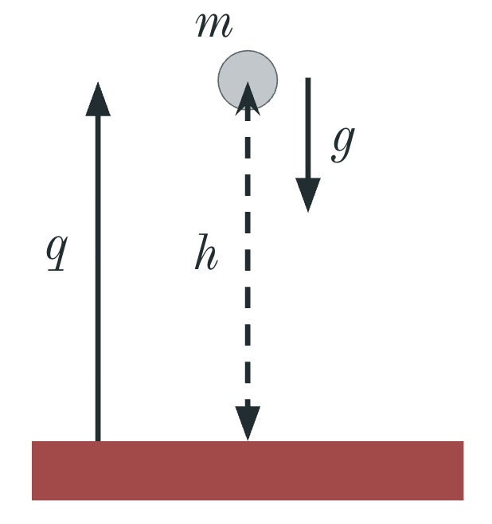

### なぜエネルギーは保存する？ #### 〜自由落下でわかる“対称性”とネーターの定理〜 --- ### 自己紹介 <div class="profile-container"> <div class="profile-left"> * さめ(мег-сск) * ⚛️ VRChat物理学集会の主催 * 🧑🎓 社会人学生として通信制大学在学中 * 得意分野: * 📸 コンピュータビジョン (画像認識/点群処理) * 🌍 空間情報処理 (地理情報/リモートセンシング) * ☁️ クラウドインフラ設計/IaC (AWS, GCP) * [GitHub](https://github.com/s-sasaki-earthsea-wizard) * [YouTube](https://www.youtube.com/@SyotaSasaki-EW) * [Speaker Deck](https://speakerdeck.com/syotasasaki593876) </div> <div class="profile-right"> <img src="assets/images/icon_circle.png" alt="avatar" height="350px" width="350px"> </div> </div> --- ### 今日話すこと <div class="simple-box"> * 物理にはいろんな保存則がある * エネルギー保存則 * 運動量保存則 * 角運動量保存則 * and more... </div> <br> <div class="highlight-box"> * なんでいろんな物理量は保存する？ * **保存則は対称性から導かれる** * 今日は自由落下という最もシンプルな運動で、対称性と保存則の関係を見ていきます！ * **ネーターの定理**がその謎を解く！ </div> --- ## ネーターの定理と ## 自由落下 --- ### ネーターの定理 <div class="simple-box"> * **ネーターの定理の主張** * 「対称性があると保存則がある」 * 🤔これだけだとよくわからない... * 自由落下のような簡単な例から考えよう！ </div> <div class="caption">エミー・ネーター (1882 - 1935)</div> --- ### 自由落下運動とエネルギー保存則 <div class="simple-box"> * 重力加速度$g$の地球上で静止している質量$m$の物体を地面からの高さ$q=h$の位置で自由落下させる * 地面に到達する時の速度$V$は？ </div> </src> --- ### エネルギー保存則 <div class="simple-box"> * **位置エネルギーと運動エネルギーの和は保存する** </div> $$ mgq + \frac{1}{2}mv^2 = \text{一定} $$ <div class="simple-box"> * 地面に到達する時、位置エネルギーがすべて運動エネルギーになるので、速度$V$は、 $$ mgh = \frac{1}{2}mV^2 \Rightarrow V = -\sqrt{2gh} $$ </div> <div class="caption">負になるのは鉛直上向きを正とした$q$軸の逆方向だから</div> --- ## エネルギー保存則の ## 時間対称性と ## 空間対称性の破れ --- ### 自由落下運動の時間対称性 <div class="simple-box"> * **自由落下の結果は時間に依存しない** * 高さ$h$から物体を落とした時、地面に衝突する時の速度$V$は * 今日の0時に落としても * 明日の12時に落としても * **時間によらず結果は変わらない！** </div> <br> <div class="highlight-box"> * **自由落下運動は時間に対して対称性を持つ** </div> <br> <div class="caption">ものすごく長い時間スケールで考えると地球の質量分布が変わって重力加速度$g$が変わることはあり得るが...</div> --- ### 自由落下運動の空間対称性の破れ <div class="simple-box"> * **自由落下の結果は鉛直方向の変化によって変わる** * 高さ$h + \delta h $から物体を落とした時 * $V = -\sqrt{2g(h + \delta h)}$ * **高さによって位置エネルギーが変化し、速度が変わる！** </div> <br> <div class="highlight-box"> * **重力によって空間は鉛直方向に一様ではない** * 高さによって位置エネルギーが変化する * 鉛直方向の並進対称性が破れている </div> --- ### 重力が破る鉛直方向の対称性 <div class="simple-box"> * **水平方向には対称性がある** * 物体を水平方向に$\delta x$だけずらしても * 重力は鉛直下向きに一様にかかるので * → ✅ 自由落下の結果は変わらない </div> <br> <div class="highlight-box"> * **鉛直方向には対称性がない** * 地球の重力場が存在する * → 高さ$q$によって位置エネルギー$mgq$が変わる * → ❌ 空間が一様ではない！ * **重力が鉛直方向の空間対称性を破っている** </div> --- ### 対称性とは？ <div class="simple-box"> * **物理における対称性** * ある変換に対して性質が変わらないこと * 例: 自由落下運動 * 時間を$t \rightarrow t + \delta t$にずらしても * → ✅ 結果は変わらない * 高さを$q \rightarrow q + \delta q$にずらすと * → ❌ 結果が変わる </div> <br> <div class="highlight-box"> * **対称性がある → 対称性に対応する保存量がある** * これが**ネーターの定理**の核心！ </div> --- ## 自由落下の運動方程式 --- ### 自由落下の運動方程式 <div class="simple-box"> * ニュートンの運動方程式 $$ f = ma = -mg \Rightarrow a = -g $$ 物体が距離$h$を移動するのに必要な時間は $$ h = \frac{1}{2} gt^2 \Rightarrow t = \sqrt{ \frac{2h}{g} } $$ $$ \therefore V = at = -gt = -\sqrt{2gh} $$ </div> --- ### 同じ問題を2つのアプローチから解けた <div class="simple-box"> * 両者の間に何か密接な関係がありそう... </div> <br> <div class="highlight-box"> * 何が両者を結びつけるか？ * **対称性**と**ネーターの定理** * オイラー-ラグランジュ方程式 (EL方程式) </div> --- ### ラグランジアン <div class="simple-box"> * ラグランジアン$L$を以下のように定義する $$ L \triangleq T - V $$ * $T$: 運動エネルギー * $V$: 位置エネルギー </div> --- ### 最小作用の原理 <div class="simple-box"> * **作用$S$の定義** * ラグランジアン$L$の時間積分 $$ S = \int_{t_1}^{t_2} L dt $$ </div> <br> <div class="highlight-box"> * **最小作用の原理** * 物体は作用の変分$\delta S = 0$となる経路を通って運動する </div> <br> <div class="simple-box"> * この原理からオイラー-ラグランジュ方程式が導かれる！ </div> --- ### オイラー-ラグランジュ方程式 <div class="simple-box"> * ラグランジアン$L$が定まると運動方程式は以下のように書ける $$ \frac{d}{dt} \left( \frac{\partial L }{\partial \dot{q}} \right) = \frac{\partial L }{\partial q} $$ </div> * $q$: 位置 * $\dot{q}$: 速度 (位置の時間微分$dx/dt$) * $\ddot{q}$: 加速度 (位置の2階時間微分$d^2x/dt^2$) * 最小作用の原理から導出可能だが今日は割愛 --- ### 自由落下のラグランジアン <div class="simple-box"> * ラグランジアン$L$は $$ L = T - V = \frac{1}{2}m\dot{q}^2 - mgq $$ </div> <br> <div class="highlight-box"> * このラグランジアン$L$をEL方程式に代入 </div> --- ### 自由落下のEL方程式 <div class="simple-box"> $$ \text{左辺} = \frac{d}{dt} \left( \frac{\partial }{\partial \dot{q}} \left( \frac{1}{2}m\dot{q}^2 - \cancel{mgq} \right) \right) = m\ddot{q}$$ $$ \text{右辺} = \frac{\partial }{\partial q} \left( \cancel{\frac{1}{2}m\dot{q}^2} - mgq \right) = -mg$$ $$ \text{左辺} = \text{右辺} \Rightarrow \ddot{q} = -g $$ </div> <br> <div class="highlight-box"> * **ラグランジアンがわかれば運動方程式は決まる！** </div> --- ## ラグランジアンの全微分と対称性 --- ### ラグランジアンの全微分-1 <div class="simple-box"> * ラグランジアン$L(q, \dot{q}, t)$を位置$q$, 速度$\dot{q}$, 時刻$t$の関数として考え、全微分する $$ dL = \frac{\partial L}{\partial q} dq + \frac{\partial L}{\partial \dot{q}} d\dot{q} + \frac{\partial L}{\partial t} dt $$ $$ \frac{dL}{dt} = \frac{\partial L}{\partial q} \dot{q} + \frac{\partial L}{\partial \ddot{q}} \ddot{q} + \frac{\partial L}{\partial t}$$ </div> --- ### ラグランジアンの全微分-2 <div class="simple-box"> ライプニッツ則 $(fg)' = f'g + fg'$ より $$ \frac{d}{dt} \left( \dot{q} \frac{\partial L}{\partial \dot{q}} \right) = \ddot{q} \frac{\partial L}{\partial \dot{q}} + \dot{q} \frac{d}{dt} \left( \frac{\partial L}{\partial \dot{q}} \right) $$ EL方程式を右辺第2項に代入すると、 $$ \frac{d}{dt} \left( \dot{q} \frac{\partial L}{\partial \dot{q}} \right) = \ddot{q} \frac{\partial L}{\partial \dot{q}} + \dot{q} \frac{\partial L}{\partial q} $$ この式はラグランジアンの全微分の第1−2項と一致 </div> --- ### ラグランジアンの全微分-3 <div class="simple-box"> ライプニッツ則から得られた結果をラグランジアンの全微分の式に代入し、 $$ \frac{dL}{dt} = \frac{d}{dt} \left( \dot{q} \frac{\partial L}{\partial \dot{q}} \right) + \frac{\partial L}{\partial t} $$ $$ \frac{d}{dt} \left( \dot{q} \frac{\partial L}{\partial \dot{q}} - L \right) = -\frac{\partial L}{\partial t} $$ </div> --- ### $ \frac{\partial L}{\partial t} = 0 $の時の保存量 <div class="simple-box"> * 自由落下運動で$L$は時間変化しないので、$ \frac{\partial L}{\partial t} = 0 $ $$ \frac{d}{dt} \left( \dot{q} \frac{\partial L}{\partial \dot{q}} - L \right) = 0 $$ $$ \dot{q} \frac{\partial L}{\partial \dot{q}} - L = \text{時間変化に対して一定}$$ </div> --- ### 時間対称性とエネルギー保存則 <div class="highlight-box"> * この時間変化に対して不変な量$ \dot{q} \frac{\partial L}{\partial \dot{q}} - L $をエネルギーと呼ぶ！ $$ \dot{q} \frac{\partial L}{\partial \dot{q}} - L $$ $$= \dot{q} \frac{\partial}{\partial \dot{q}}\left( \frac{1}{2}m\dot{q}^2 - \cancel{mgq} \right) - \left(\frac{1}{2}m\dot{q}^2 - mgq \right)$$ $$= \frac{1}{2}m\dot{q}^2 + mgq = \text{エネルギー}$$ </div> --- ### 自由落下のラグランジアンと対称性 <div class="highlight-box"> $$ L = \frac{1}{2}m\dot{q}^2 - mgq $$ * $L$は時間$t$によって変化しない * 高さ$q$の変化によって$L$も変化する * 時間並進対称性から保存量が得られる * この保存量がエネルギーである！ </div> --- ### ネーターの定理の核心 <div class="simple-box"> * **対称性が保存量を生み出すメカニズム** * ある変換に対してラグランジアン$L$が不変 * ラグランジアンの全微分から保存量が導かれる </div> <br> <div class="highlight-box"> * **保存則は数学的帰結** * エネルギー保存則のような基本法則でさえラグランジアンの対称性から導かれる数学的結果 * 対称性 → 保存量という普遍的な構造 </div> --- ### ネーターの定理の一般系 <div class="simple-box"> * **ネーターの定理（一般形）** * 連続的な対称性変換 $q \rightarrow q + \varepsilon \delta q$ に対して * ラグランジアンが不変 $\delta L = 0$ ならば * 保存量$Q$(Noether charge)が存在する $$ Q = \frac{\partial L}{\partial \dot{q}} \cdot \delta q = \text{一定} $$ * 相対論や統計力学でも活躍する重要な定理！ </div> --- ## 補足とまとめ --- ### 運動量保存則と角運動量保存則 <div class="simple-box"> * **運動量保存則** * 空間並進対称性 $\frac{\partial L}{\partial q} = 0$が成り立つ時 * 運動量 $p = \frac{\partial L}{\partial \dot{q}} = m\dot{q}$ が保存される </div> <br> <div class="simple-box"> * **角運動量保存則** * 空間が回転対称性(ラグランジアンが回転に対して不変)を持つ時 * 角運動量 $\vec{L} = \vec{r} \times \vec{p}$ が保存される </div> --- ### より進んだ内容: 4元運動量 <div class="simple-box"> * **相対論では時間と空間を統一的に扱う** * エネルギーと運動量をまとめた4元運動量 $$ p^\mu = \left( \frac{E}{c}, \vec{p} \right) = \left( \frac{E}{c}, p_x, p_y, p_z \right) $$ </div> <br> <div class="highlight-box"> * **時空の対称性から2つの保存則が同時に導かれる** * 時間並進対称性 → エネルギー保存則 * 空間並進対称性 → 運動量保存則 * 相対論では両者が統一される！ </div> --- ### まとめ <div class="impact-analysis"> * **なぜエネルギーは保存する？** * 自由落下の結果はいつ落としても変わらない * この**時間対称性**がエネルギー保存則の源 * **ラグランジアンから自然に導かれる** * ラグランジアンが時間に依存しない * このときの保存量がエネルギーである * **ネーターの定理の本質** * 対称性があれば保存則がある </div> --- ### 主要参考文献 <div class="simple-box"> * 江沢 洋, 解析力学, 培風館 (2007) * ものすごく丁寧に広い話題を扱った教科書。光学や量子力学への応用例も豊富。 * 小出 昭一郎, 解析力学, 岩波書店 (1983) * 初学者向けの教科書。最初はこれがオススメ。 * 竹内 修, 解析力学, https://dora.bk.tsukuba.ac.jp/~takeuchi/ * 強制振動、空気抵抗のラグランジアンなど、より発展的な話題を取り上げています </div> --- ### LT登壇者の募集 <div class="simple-box"> * 物理学集会ではLT登壇者を募集しています！ * どんなジャンルでもOK！ * 興味のある方は物理学集会のDiscordサーバーまで！ </div> <img src="assets/images/qrcode.png" width="200px">